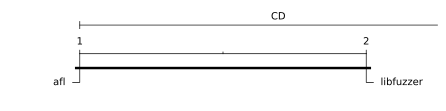
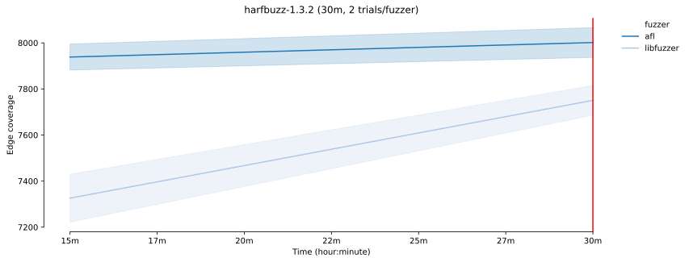
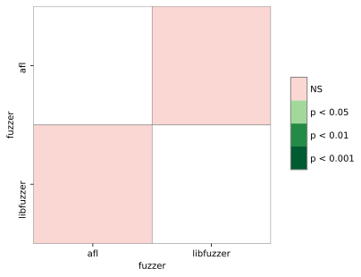
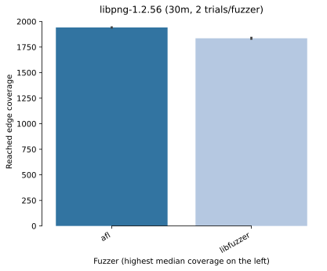
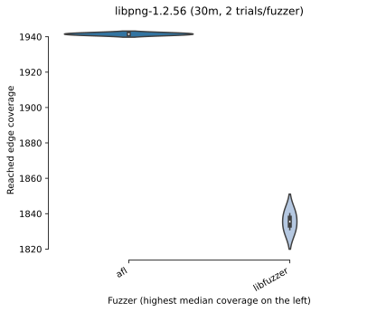
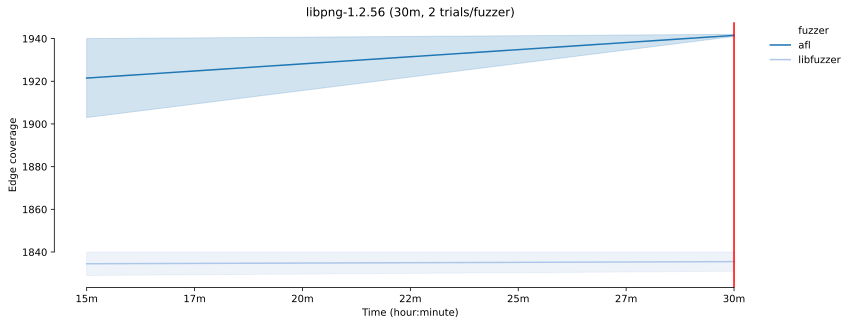

FuzzBench: test report
warning
Please consider this as a preliminary report to
demonstrate the capabilities of FuzzBench. While we have
tried our best, we have not confirmed that we configured
everything correctly. We are hoping to work together
with the community to validate results and improve the
set of fuzzers, benchmarks, and their configurations in
the future.
See FAQ
for more details.
experiment summary
We show two different aggregate (cross-benchmark) rankings of fuzzers. The first is based on the average of per-benchmarks scores, where the score represents the percentage of the highest reached median coverage on a given benchmark (higher value is better). The second ranking shows the average rank of fuzzers, after we rank them on each benchmark according to their median reached covereges (lower value is better).By avg. score
| average normalized score | |
|---|---|
| fuzzer | |
| afl | 100.0 |
| libfuzzer | 95.7 |
By avg. rank
| average rank | |
|---|---|
| fuzzer | |
| afl | 1.0 |
| libfuzzer | 2.0 |
-
Critical difference diagramThe diagram visualizes the average rank of fuzzers (second ranking above) while showing the significance of the differences as well. What is considered a "critical difference" (CD) is based on the Friedman/Nemenyi post-hoc test. See more in the documentation.
Note: If a fuzzer does not support all benchmarks, its ranking as shown in this diagram can be lower than it should be. So please check the list of supported benchmarks for the fuzzer(s) of your interest. The list could be specified in the fuzzer's README.md like this.
-
Median coverages on each benchmark
fuzzer afl libfuzzer benchmark harfbuzz-1.3.2 8001.5 7750.5 libpng-1.2.56 1941.5 1835.5
harfbuzz-1.3.2 summary
Ranking by median reached coverage
Reached coverage distribution

Mean coverage growth over time

* The error bands show the 95% confidence interval
around the mean coverage.
-
Sample statistics and statistical significance
Coverage sample statistics
count mean std min 25% median 75% max fuzzer time afl 1800 2.0 8001.5 91.216775 7937.0 7969.25 8001.5 8033.75 8066.0 libfuzzer 1800 2.0 7750.5 91.216775 7686.0 7718.25 7750.5 7782.75 7815.0
Mann-Whitney U test  The table summarizes the p values of pairwise Mann-Whitney U tests. Green cells indicate that the reached coverage distribution of a given fuzzer pair is significantly different.
Coverage reports
Choose the fuzzer to see the coverage report of that fuzzer on this benchmark.
libpng-1.2.56 summary
Ranking by median reached coverage
Reached coverage distribution
Mean coverage growth over time

* The error bands show the 95% confidence interval
around the mean coverage.
-
Sample statistics and statistical significance
Coverage sample statistics
count mean std min 25% median 75% max fuzzer time afl 1800 2.0 1941.5 0.707107 1941.0 1941.25 1941.5 1941.75 1942.0 libfuzzer 1800 2.0 1835.5 6.363961 1831.0 1833.25 1835.5 1837.75 1840.0
Mann-Whitney U test The table summarizes the p values of pairwise Mann-Whitney U tests. Green cells indicate that the reached coverage distribution of a given fuzzer pair is significantly different.
Coverage reports
Choose the fuzzer to see the coverage report of that fuzzer on this benchmark.
experiment data
You can download the raw data for this report here.Check out the documentation on how to create customized reports using this data. Also see some example Colab notebooks for doing custom analysis on the data here.
The experiment was conducted using this FuzzBench commit: 945862155e60e304f181287a94327cc2886942e6